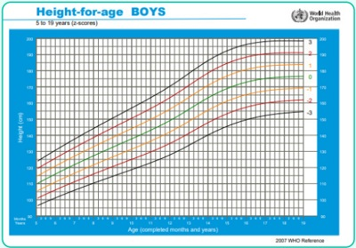
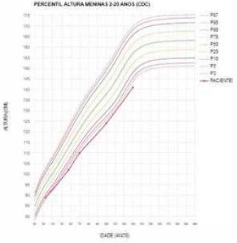
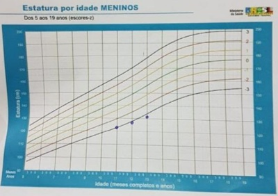
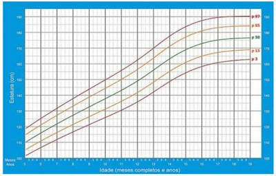

A maior velocidade de crescimento anual acontece:
Criança do sexo masculino de 8 anos de idade comparece a unidade básica de saúde para consulta de rotina. Sua mãe queixa-se de que o paciente é o mais baixo da sua turma e que ele não cresceu nos últimos meses, na sua percepção. Ao exame físico, o paciente tinha z-score entre -1 e -2 na curva de estatura para idade da Organização Mundial de Saúde (OMS). Na consulta anterior, há 1 ano, o paciente estava com z-score entre 0 e -1 na mesma curva. Adicionalmente, apresentou volume testicular de 5mL ao exame da genitália. Qual conduta deve ser adotada neste momento?
Menina de 7 anos é trazida para consulta ambulatorial com queixa de baixa estatura. A mãe refere que a criança tem desenvolvimento normal, mas que é bem menor que seus colegas de turma da escola. Ao ser questionada sobre doenças prévias, a mãe relata que a menina foi internada mais de cinco vezes por infecção urinária, com presença de febre e que o primeiro episódio aconteceu aos três meses de vida. À época, foi pedida uma ultrassonogra a (USG) de vias urinárias, que não conseguiu realizar. Ao exame físico, a criança apresenta PA = 128 x 86mmHg, FC = 98bpm, FR = 34ipm, sem outras alterações, exceto pela baixa estatura, classificada como abaixo do alvo genético e do z escore -3 para a idade. O IMC é adequado para a idade. A mãe trouxe um hemograma que mostra: Hgb = 9g/dL, VCM = 79, RDW = 11. Para a investigação diagnóstica dessa criança, é essencial solicitar
Menino de 9 anos está em avaliação por baixa estatura. Nasceu a termo, diagnosticado com estenose pulmonar, corrigida cirurgicamente no período neonatal. Aos 6 meses, foi ainda submetido a oriquidopexia bilateral para tratamento de criptorquidia. Ao exame: face triangular, hipertelorismo ocular, ptose palpebral, implantação baixa do pavilhão auricular, micrognatia e pescoço curto e alado. Estatura ao redor de -3 desvios padrão desde os 5 anos de idade. Idade óssea, 7 anos. Estatura alvo, 175 cm. A primeira hipótese diagnóstica deve ser
Antonio, 8 anos, é levado à consulta por baixa estatura. No último ano, passou a ganhar peso, tem pouca energia, dorme exageradamente e reclama de sentir muito frio. A sua curva de crescimento mostra que ele caiu do percentil 50 para o percentil 5 na altura, mas o peso subiu para o percentil 90 em relação à altura. No exame físico, está obeso com os cabelos finos e reflexos diminuídos. A conduta mais apropriada para esta criança é:
Em consulta de rotina, pai manifesta preocupação com a altura de seu lho de nove anos de idade, pois é um dos menores da turma. Qual é o dado mais importante na avaliação do crescimento da criança?
Quanto à avaliação nutrológica em pediatria, assinale a alternativa correta.
Menina, 12a, estatura abaixo do percentil 3 e cresceu 6,5 cm nos últimos três anos, com idade óssea de 11 anos e nega menarca. Nega uso de medicamentos, refere alimentação saudável e atividade física. Exame físico: estádio puberal de Tanner= M1P1 sem outras alterações. O QUE JUSTIFICA A INVESTIGAÇÃO DA ESTATURA NESTE CASO É:
Considerando o crescimento do lactente, quantos aos principais índices antropométricos utilizados na avaliação do crescimento e às principais alterações com relação à Estatura/Idade (E/I), é CORRETO afirmar:
Em relação ao processo de crescimento infantil, é correto afirmar que:
O crescimento é um processo dinâmico e necessita da utilização de gráficos para sua avaliação. Considerando as características conforme a fase do desenvolvimento e sexo, assinale a alternativa correta.
Pedro tem 7 anos de idade e comparece à UBS para consulta de rotina. Sua mãe está preocupada, pois ele é o menor da classe e isso tem di cultado seu relacionamento com os colegas. Além disso, Pedro tem diagnóstico de asma controlada com uso de corticoide inalatório intermitente em dose baixa, associado a beta 2 agonista quando apresenta sintomas; sua última exacerbação de asma ocorreu há 1 ano. Ele está muito desatento durante as aulas e apresenta constipação intestinal há cerca de 1 ano, nessa ocasião, sua estatura era de 100 cm. A estatura de seu pai é de 183cm e a de sua mãe é de 163cm. O exame físico é normal, sua estatura atual é de 103 cm (gráfico abaixo) e o estadiamento Tanner é G1P1. Sua mãe traz um exame de idade óssea de três meses atrás, com resultado de 4 anos. De acordo com o quadro clínico de Pedro, qual é a provável causa para o problema de crescimento apresentado por ele?

Adolescente de 13 anos está preocupado porque se considera muito baixinho. Sua altura na consulta de hoje é de 145 cm (escore z entre –2 e –1) e era de 139 cm há 6 meses atrás (escore z entre –2 e –1), está no estádio puberal G3P3. Sua estatura alvo, calculada com base na altura dos seus pais, é de 175 cm. Frente a esses achados, a conduta deve ser
No acompanhamento do crescimento, é importante a aferição da estatura e observase que em média, no primeiro ano de vida, o lactente cresce em torno de:
Assinale a alternativa que apresenta uma síndrome associada a alta estatura
Uma paciente com 13 anos e 6 meses procura atendimento para avaliar seu desenvolvimento. Estuda no 7° ano com bom rendimento. Nega tratamento atual. Nega internações hospitalares ou cirurgias prévias. Refere alergia respiratória controlada e diversos episódios de otite média prévios. Desde os 9 anos de idade apresenta frequentes episódios de cefaleia bi- temporal intensa. Nega menarca e sua pubarca ocorreu há 2 anos. Tem uma irmã de 16 anos que é saudável, assim como seus pais, que não são consanguíneos e medem 164 cm (mãe) e 176 cm (pai). Apresenta peso de 39 kg (P1 O), estatura total de 144 cm, estatura sentada de 87 cm e seu estágio puberal (Tanner) é M1 P2. Trouxe dados de sua curva de crescimento (abaixo). Em avaliação em UBS haviam sido solicitados os exames complementares com seus resultados demonstrados abaixo (observação: VR = valor de referência normal para a idade): Idade óssea = 11 anos; TSH = 5,6 mUl/mL (VR = 0,5 a 4,5); LH = 16 mUl/mL (VR = 0,4 a 8); FSH = 35 mUl/mL (VR = 4,5 a 10). Além de anamnese e exame físico mais detalhado, diante dos dados apresentados acima, qual a conduta mais adequada para esta paciente nesse momento?

Menino de 5 anos de idade, trazido à consulta de retorno pelo pai preocupado porque a criança está muito pequena. Criança nascida a termo com peso de 2.850g, apresenta asma intermitente desde os 3 anos, estatura alvo: 168 cm. Radiogra a de punhos: Idade Óssea: -1 DP; velocidade de crescimento: 3 cm/ano; IMC: escore z entre -1 e 0; Estatura/Idade: escore z entre -1 e 0. Qual parâmetro indica maior necessidade de investigação do quadro?
Escolar é levado ao ambulatório por apresentar crescimento menor em relação aos colegas de turma preocupando seus pais. A melhor conduta nesse caso é:
Um menino cujo pai tem altura de 182cm e sua mãe 162cm, terá qual estatura alvo média esperada na sua vida adulta?
Escolar do sexo feminino com 6 anos de idade, previamente saudável, é trazido ao seu consultório com queixa de baixa estatura. A família tem boas condições socioeconômicas, alimentação dentro do padrão preconizado. A mãe mede 1,55 m (entre score -1 e -2) e o pai mede 1,75 (entre score 0 e -1). Há exatamente um ano sua estatura era de 110cm e pesava 17,8 kg. Exames complementares realizados previamente mostram os seguintes resultados: hemograma normal, Urina I normal, Protoparasitológico de fezes com três amostras negativas e idade óssea compatível com cinco anos. Atualmente, a criança mede 115 cm (score 0) e pesa 20 kg, tem desenvolvimento neuropsicomotor adequado e restante do exame físico normal. A melhor conduta é
Felipe, 8 anos, apresenta baixa estatura, sem outras comorbidades. O melhor parâmetro clínico e/ou laboratorial para determinar o prognóstico desse paciente é:
Na investigação de baixa estatura na infância é fundamental:
Um lactente do sexo masculino com dois meses de idade e em aleitamento materno exclusivo é avaliado à consulta de rotina de puericultura. Ao exame físico, apresenta peso: 4.600 g, comprimento: 58 cm, perímetro cefálico (PC): 39 cm. Na história gineco-obstétrica, tem relato de ter nascido por parto vaginal na 38ª semana de gestação, peso: 3.400 g, comprimento: 50 cm e PC: 35 cm. Sobre esse lactente, assinale a alternativa correta.
Um menino, de 10 anos e 6 meses, consulta com queixa de baixa estatura. Refere que sempre foi o menor entre os seus colegas. Nega outras queixas e doenças anteriores significativas. Mãe refere que o paciente media 136 cm quando tinha 9 anos. Pai com 182 cm (P50) e mãe com 159 cm (P25). Ao exame paciente com 141 cm (P50), peso 30 kg (P25), pubarca grau 2 (escala de Tanner) e testículos com 2 ml bilateralmente. Qual o diagnóstico mais provável?
Menino, de 12 anos e 6 meses de idade, consulta com queixa de baixa estatura. Não apresenta outras queixas. Alimentação adequada para idade e não faz uso de medicação contínua. Apresentou quadro de asma a partir de 4 anos, fez uso de glicocorticoide inalatório até há 2 anos. Sem crise de bronco espasmo há 3 anos. Mãe refere que com 11 anos a estatura era de 147. Nasceu com 37 semanas de gestação com peso de 2400 g e 46 cm comprimento. Pai com 187 cm (percentil 90) e mãe com 167 cm (percentil 75). Ao exame, paciente com 152 cm (percentil 50), peso de 52 kg (percentil 75), exame segmentar sem alterações e genitália com alguns pelos longos, escuros e grossos em região pubiana e testículos com 4 ml, bilateralmente. Qual o provável diagnóstico etiológico para o caso?
Um menino, de 10 anos e 6 meses, consulta com queixa de baixa estatura. Refere que sempre foi o menor entre os seus colegas. Nega outras queixas e doenças anteriores significativas. Mãe refere que o paciente media 136 cm quando tinha 9 anos. Pai com 182 cm (P50) e mãe com 159 cm (P25).Ao exame paciente com 141 cm (P50), peso 30 kg (P25), pubarca grau 2 (escala de Tanner) e testículos com 2 ml bilateralmente. Qual o diagnóstico mais provável?
Miguel, 13 anos, é avaliado, pelo médico da unidade básica de saúde, por ele achar que não está crescendo direito há 3 anos. Não há relato de doença crônica, alterações alimentares, ou lesões do sistema nervoso central. Grá co de crescimento mostra altura e peso abaixo e paralelos ao escore z-2 nos últimos três anos, de forma ascendente, com velocidade de 6 cm/ano. A altura-alvo é no escore z 0. A idade óssea é três anos mais baixa do que a idade cronológica. Exame físico: Tanner G1P1, sem demais alterações. O diagnóstico para essa baixa estatura é:
Revisar: possível letra faltando em enunciado
João, de 13 anos de idade é trazido à consulta com queixas de estar mais baixo do que seus colegas. É um adolescente previamente hígido, não apresentou intercorrências no período neonatal, e apresenta boas condições de saúde. Sua estatura encontra-se abaixo do escore Z-2, seu IMC é adequado para sexo e idade. Ao exame físico, encontra-se no estadiamento de Tanner G1P1, sua velocidade de crescimento é de 6 cm/ano e sua idade óssea é de 10 anos. Seu pai apresentou atraso puberal, e ambos os pais apresentam estatura média. Analise as afirmações abaixo: I. João provavelmente apresenta alguma deficiência hormonal como causa de baixa estatura. II. Pacientes com doença celíaca que apresentem baixa estatura sempre se queixam de problemas gastrointestinais associados. III. O diagnóstico mais provável é de atraso constitucional do crescimento e puberdade. IV. O prognóstico de estatura final de João é bom, semelhante ao seu padrão familiar.
Uma menina de 6 anos de idade é levada a uma clínica pediátrica com uma queixa de baixa estatura. Ela é fruto de um casamento não consanguíneo, nascida a termo de cesariana eletiva. Seu peso ao nascer foi de 2,1 kg e 43 cm. No período pós-natal, cou internada na unidade porque foi inicialmente alimentada por sonda por di culdades alimentares. Seu desenvolvimento neuropsicomotor foi levemente atrasado. No exame, ela tem fácies triangular, com testa grande e clinodactilia do quinto dedo. Seu peso e altura estão ambos abaixo do terceiro percentil. Observa-se assimetria dos membros inferiores, com hipertrofia do membro inferior esquerdo e discrepância de 2,5 cm no comprimento da perna. Qual é o diagnóstico mais provável neste caso?
Menina com 7 anos de idade, é trazida para consulta com queixa de ser menor que as colegas da escola. Exame físico: sem alterações clínicas; estadiamento puberal: M1P1; Peso, Estatura e IMC no percentil 25 das curvas para idade e sexo. Estatura da Mãe: 155 cm e estatura do Pai: 169 cm. Frente a esse caso, qual a afirmativa é adequada?
Escore z é bastante utilizado em algumas áreas, em particular em nutrição. O que é o escore z?
Menina com 8 anos de idade atendida em consulta de retorno ambulatorial com queixa de baixa estatura, apresentou um episódio de amigdalite no período interconsulta, traz RX IO compatível com 7 anos de idade e anotação de que cresceu 3 cm no último ano. Apresenta ao exame físico Peso: P10, Estatura: P3 e IMC: P15; M1P1. Qual das informações acima indica possibilidade de que o quadro precisa de prosseguimento na investigação?
Um menino de 13 anos que faz acompanhamento médico no ambulatório escola, está abaixo do percentil 3 para altura (equivalente ao percentil 50 aos 9 anos de idade). O seguinte achado dará a ele o melhor prognóstico para uma altura normal quando adulto:
Uma adolescente de 16 anos acompanhada de sua mãe vem ao consultório do pediatra com queixa de que é a menor da classe. A mãe nega antecedentes de doenças, diz que a lha sempre foi menor que os irmãos e que ainda não teve a menarca. Ao exame físico, o pediatra constata baixa estatura, não apresenta telarca ou pubarca e não observa nenhum sinal dismór co. Dentre os exames citados a seguir, aquele que é indicado para a primeira hipótese diagnóstica desse quadro clínico é:
Revisar: possível letra faltando em enunciado
Na baixa estatura familial, observa-se:
Mãe leva adolescente de 15 anos para consulta médica, preocupada com o crescimento do lho, pois o irmão mais novo tem a mesma altura dele. Ao exame físico, sua estatura se encontra no score -1 e peso no score 0; estádio de Tanner G1P1. Qual o diagnóstico?
Uma mãe leva a lha de 8 anos à consulta pediátrica por estar achando a criança muito pequena. Relata que vem percebendo, nos últimos 8-12 meses, que a menina não está mais crescendo. Nesse período, começou a apresentar hipoatividade, sonolência e constipação. A velocidade de crescimento nos últimos 12 meses foi de 2,5 cm/ano. Ao exame físico, observam-se estatura entre score -1 e -2 e peso score +1. Demais dados do exame físico constam normais. Assinale a alternativa CORRETA em relação a esse caso.
Adolescente de 13 anos, sem antecedentes patológicos, vem com queixa de que é o menor aluno de sua classe. A sua mãe tem 168 cm e teve menarca aos 14 anos, o seu pai tem 176 cm e parou de crescer por volta dos 17 anos. A estatura alvo calculada para o menino é de 178,5 cm (entre percentil 50 – 85 da curva da OMS). O exame físico é normal, ele está no estádio puberal G2P2, pesando 44 kg, com 145 cm (percentil 3 – 15 da curva da OMS) e com IMC = 20,9 (percentil 50 – 85 da curva da OMS). Ele cresceu 8 cm no último ano e trouxe uma radiogra a de punho atual com idade óssea de 11 anos. Nesse caso,
Adolescente, sexo masculino, com 11 anos de idade, procurou o pediatra com queixa de baixa estatura. Há relato de crescimento adequado até a adolescência, quando começou a crescer um pouco mais lentamente, segundo a impressão da mãe. Gestação e parto sem anormalidades. Ao nascer, o peso foi 3500g e o comprimento, 50cm. Desenvolvimento neuropsicomotor sempre foi adequado. Bom desempenho na escola. Nega doenças crônicas graves. Com a idade de 10 anos, passou por uma consulta com o médico de família da sua região, que não encontrou nenhuma anormalidade clínica e suas medidas foram: peso = 23kg e estatura = 122cm (escore z: -2,2). Na consulta atual, exame físico persiste sem anormalidades, o estadiamento puberal é G1P1 pelos critérios de Tanner e a estatura é 127cm (escore z: -2,2) e peso de 26kg. A idade óssea nesse momento é de 8,9 anos. A mãe tem 162cm e o pai tem 173cm. A causa mais provável da baixa estatura deste paciente é:
Menino, 11 anos de idade, sem comorbidades, está em consulta de rotina. Os pais estão preocupados porque acham que ele não está crescendo muito. Sem outras queixas e com exame clínico sem alterações significativas. A última consulta havia sido realizada há 6 meses, quando apresentava estatura de 139 cm (entre percentis 15 e 50), índice de massa corpórea (IMC) de 20 kg/m2 (entre percentis 85 e 97) e estádio de Turner G2P1. Na consulta de hoje está com estatura de 141,5 cm (entre percentis 15 e 50), IMC de 22 kg/m2 (entre percentis 85 e 97) e estádio de Turner G2P2. A altura do pai é 176 cm e a da mãe é 151 cm. Qual é a conduta?
Menino, 9a, é atendido na Unidade Básica de Saúde. Os pais referem que é o mais baixo da classe e que não está crescendo. É hígido, ativo e tem uma alimentação saudável. Exame físico: estatura está abaixo do percentil 3 da curva de crescimento adotada pelo Ministério da Saúde. A CONDUTA É:
Com relação à velocidade de crescimento, assinale a alternativa CORRETA.
Menina com 7 anos de idade, é trazida para consulta com queixa de ser menor que as colegas da escola. Exame físico: sem alterações clínicas; estadiamento puberal: M1P1; Peso, Estatura e IMC no percentil 25 das curvas para idade e sexo. Estatura da Mãe: 155 cm e estatura do Pai: 169 cm. Frente a esse caso, qual a afirmativa é adequada?
Adolescente de 11 anos, previamente hígida, é levada para atendimento com queixa de que se acha muito baixa. Não há história de internações prévias. Nega menarca ou sexarca. Ao exame, está em bom estado geral, com ectoscopia normal e sem alterações no exame dos aparelhos cardiovascular e respiratório. O exame do abdômen é normal; orofaringe e genitália sem alterações; presença de broto mamário e ausência de pelos pubianos. Ao plotar suas medidas no gráfico, encontra-se com estatura para idade entre os Z escore -2 e -3 e com IMC para idade entre os Z escore -1 e -2. O alvo genético está no Z escore -1. A radiogra a de mão e punho esquerdos revela idade óssea de 9 anos. O provável diagnóstico e desfecho da estatura na vida adulta, respectivamente, são:
Menina de 6 anos é levada à consulta médica pelos pais, que relatam que ela é a mais baixinha da sala e que a irmã, nessa idade, era mais alta As alturas da criança, do pai e da mãe, respectivamente, são: 108cm, 163cm e 150cm. A estatura-alvo prevista para a paciente, em cm, é:
Quanto aos genes e fatores de transcrição relacionados ao crescimento, no que se refere ao gene SHOX, assinale a alternativa correta.
João, 6 anos, apresentava crescimento próximo do Z-escore -1. Entre segundo e quarto ano de vida houve redução da velocidade de crescimento assumindo um canal pouco abaixo do Z-escore -2. Estatura alvo no Z-escore -1. Mãe com menarca aos 12 anos e pai com estirão ao redor de 15 anos. Retornou ao pediatra agora e visto que mantém ritmo de crescimento de 5cm/ano e possui Rx de idade de 4 anos, com peso no Z-escore -2 e altura pouco abaixo do Z-escore - 2 . A principal hipótese diagnóstica é:
Em relação ao crescimento normal, assinale a opção CORRETA.
Levando em consideração a etiologia e a fisiopatologia dos distúrbios do crescimento, assinale a alternativa correta.
Maurício, 14 anos de idade, consulta queixando-se de que seus colegas de colégio estão cando maiores que ele. Não apresenta outras queixas, não faz uso de medicação crônica. Mãe refere que aos 12 anos e 6 meses apresentava estatura de 160 cm. Pai com 185 cm (Percentil 90) e mãe com 168 cm (Percentil 75). Ao exame, paciente com estatura de 164 cm (Percentil 50), 59 kg (Percentil 75), ativo, corado, proporcional, precórdio, campos pleuropulmonares e abdômen sem particularidades, genitália com pubarca grau 2 (Escala de Tanner) e testículos com tamanho T6 pelo Orquidômetro de Prader. O diagnóstico mais provável é
Durante consulta cuja queixa principal foi baixa estatura em uma menina de 3 anos de idade, o pediatra observou a presença de baixa implantação das orelhas e cabelo, cubitus valgo, palato ogival e quarto metacarpo curto. Tais dados o zeram solicitar, dentre outros exames, o cariótipo por bandeamento GTG. Para o quadro citado, a principal hipótese diagnóstica a ser aventada é:
Criança que apresentava peso e estatura no Escore-Z +1 ao nascimento, a partir de 1 ano de vida apresenta queda na velocidade de crescimento, seguindo para novo canal de crescimento (estatura Escore-Z entre -1 e -2) que mantém até a adolescência. A maturação sexual é tardia. Assinale a alternativa com o diagnóstico mais provável e prognóstico esperado.
Mãe traz seu lho para consulta pediátrica, sexo masculino, 7 anos de idade, devido à preocupação com crescimento, desenvolvimento e estado nutricional apresentando os seguintes escores: Peso para idade Escore > Z+1 e < Z+2 IMC para idade Escore > Z-1 e < Z+1 Estatura para idade Escore > Z+2 e < Z+3. Qual o diagnóstico?
T.G.P, 6 anos, sexo masculino, trazido ao retorno no ambulatório de pediatria pela mãe, por achar a criança muito pequena. Paciente nascido a termo, pesando 2.700 g. Apresenta asma, diagnosticada aos 4 anos. Estatura- alvo: 168 cm; radiogra a de punhos: idade óssea -1 DP; velocidade de crescimento: 3 cm/ano; IMC: escore Z entre -1 e 0; estatura/idade: escore Z entre -1 e 0. Qual dos seguintes parâmetros indica maior necessidade de investigação do quadro?
A fórmula utilizada para o cálculo da altura final de meninos, em centímetros, é:
Um menino nascido a termo, com 4 kg e 51 cm, vem à consulta de puericultura aos 6 meses. Se a mãe tem 168 cm de altura e o pai 183 cm, qual a estatura-alvo da criança?
Menino, 13 anos, em investigação de baixa estatura. Mãe refere que sempre notou que o lho era menor que os outros da mesma idade, porém, nos últimos 2 anos, essa diferença vem se acentuando. Nega outras queixas, doenças crônicas ou uso de medicamentos. Nasceu de parto normal a termo, com 3.500 g e 49 cm. O pai mede 185 cm e a mãe, 172 cm. Ao exame: estatura 131,5 cm, envergadura 136 cm, púbis-pé 67,5 cm. Tanner G1P1, sem dismor as ou outras alterações. Mãe traz anotações de estaturas anteriores: 12 anos 127 cm, 11 anos 123 cm. Radiogra a de idade óssea aos 12 anos e 6 meses compatível com 8 anos. Analisando os dados antropométricos do paciente, de acordo com o gráfico e as informações apresentadas, podemos afirmar que

Menino, 9 anos de idade, em consulta na unidade básica de saúde, onde a mãe refere que o lho não cresce e que na sala de aula é o menor. Conta que o menino é saudável, come bem e é muito ativo. A mãe pede uma vitamina para que o menino que grande logo. Exame físico: após colocar o peso e a altura em uma curva de crescimento, foi constatado estatura abaixo do Percentil 3 da curva de crescimento adotada pelo Ministério da Saúde. A conduta nesta consulta é:
Qual dos seguintes parâmetros é consistente com um crescimento normal nos seis primeiros meses de vida?
Um menino de 8 anos e 6 meses é avaliado por apresentar estatura abaixo do percentil 3 e velocidade de crescimento de 3 cm/ano. Sua estatura-alvo seria no percentil 50. Ao exame físico encontra-se em bom estado geral, não apresenta dismor as ou face sindrômica, tem proporções corporais mantidas e está impúbere (Tanner G1 P1). Não são observadas outras anormalidades. Apresenta idade óssea de 6 anos e 10 meses. Os resultados dos seguintes exames complementares foram normais: hemograma, eletrólitos, proteínas, cálcio, fósforo, provas de função renal e hepática. Para prosseguir a investigação, qual das opções abaixo, contém o(s) exame(s) que deve(m) ser solicitado(s) inicialmente?
Com relação à velocidade de crescimento, assinale a alternativa CORRETA.
Em consulta com o pediatra, dois irmãos adolescentes estão intrigados porque a altura entre eles é muito diferente. A menina (F) com 18 anos, menarca há 5 anos, já parou de crescer há 2 anos, e está com 160 cm, e o menino (M) com 20 anos, também já parou de crescer há 2 anos, está com 177 cm. A mãe deles tem 157 cm e o pai 180 cm. Assinale a alternativa CORRETA:
Adolescente de 13 anos veio à consulta por baixa estatura. Negou doenças prévias e relatou ter desempenho escolar adequado. Ainda não ocorrera a menarca. A altura do pai era 175 cm, e a da mãe, de 165 cm. O exame físico revelou que a paciente encontra-se no estágio de Tanner M1P1. Seu peso era de 60 kg, a altura de 143 cm (escore-Z -2), com velocidade de crescimento de 2 cm/ano nos últimos 2 anos, e o IMC de 29,3 kg/m² (escore-Z > + 2). Para confirmação do diagnóstico mais provável, que conduta, dentre as abaixo, é fundamental?
O atraso constitucional do crescimento apresenta, em relação à previsão de estatura final:
Menina, 8 anos 6 meses, encaminhada para avaliação porque os pais acham que ela é "muito baixa". Ao exame, peso 28 kg (percentil 50) e altura 128 cm (percentil 50), estadiamento puberal M1P1. Mãe mede 150 cm e pai 180 cm. Assinale a alternativa correta:
Paulo, 8 anos, procurou atendimento pediátrico, pois está crescendo pouco. Sua mãe refere que é o menor da sala e não trocou o número do sapato neste último ano. Tem boa alimentação e pratica futebol 2 vezes por semana. A estatura da mãe é 163cm e do pai 176cm, é lho único e não apresenta comorbidades. Pai refere que sempre teve crescimento normal e mãe só lembra que menstruou aos 15 anos e apresentou hipotorepodismo após a gravidez. Paulo atualmente está com peso de 21kg (Z-escore entre-1 e -2), altura 115,2cm (Z-escore -2) e sua radiografia de idade óssea atual é de 6 anos. Exame físico não apresenta particularidades. Observado a carteirinha de saúde, constato que tem uma velocidade de crescimento de 5cm nos últimos 3 anos. Qual a hipótese diagnóstica mais provável neste caso?
Criança, sexo masculino, 12 anos de idade cronológica, em consulta médica ambulatorial, acompanhado de seus pais, queixando-se de que é um dos mais baixos na sala de aula. É lho de pais não consanguíneos, tem exames laboratoriais (hemograma,glicemia, uréia, creatinina, cálcio, fósforo, fosfatase alcalina, TSH, T4 livre, IGF-1, zinco, EAS e exame de fezes) normais, sua velocidade de crescimento foi de 5cm no último ano, idade óssea atrasada (corresponde a de um menino de 9 anos e meio), sem evidências de problemas psicossociais. Menarca materna ocorreu aos 15 anos. Ao exame físico, apresenta proporções corporais normais, estatura <2 desvios padrões para idade cronológica (idade estatural de 9 anos e 8 meses de idade) e desenvolvimento puberal de Tanner G1P1. Os pais se encontram no percentil 50 de estatura. A conduta médica a ser tomada nesse caso é:
Paciente JMNM, sexo feminino, data de nascimento: 10/06/2008, na consulta atual (05/11/2018) apresenta Tanner: M3P2, P: 29kg, e Est: 131,3cm (-1,3SD). Nega menarca. A estatura da mãe é de 163cm, e a do pai é de 173cm. Em consultas anteriores, apresentava os seguintes dados: - 05/05/2018: P: 27,5kg e Est: 127,8cm (-1,5SD) Tanner M2P2; - 30/10/2017: P: 27kg e Est: 125cm (-1,5SD) Tanner: M2P1; - 05/05/2017: P:26,6kg e Est: 123cm (-1,6SD) Tanner: M1P1; Considerando os dados acima, assinale a alternativa CORRETA.
Leia o caso clínico a seguir. Dois irmãos procuram o pediatra para saber o motivo de suas alturas serem muito diferentes. A. tem 16 anos e mede 155 cm, refere menarca aos 13,5 anos e a rma ter parado de crescer há dois anos. J., de 17 anos, também parou de crescer há dois anos e está com 178 cm. A mãe mede 160 cm e o pai, 173 cm. Considerando o histórico dos irmãos:
Em uma consulta de rotina, a mãe de um menino de 11 anos se queixa de que ele está menor que os colegas da classe escolar. Na avaliação, o médico constatou velocidade de crescimento de 7 cm/ano, com estatura entre os percentis 25 e 50 da curva de crescimento, e critério de Tanner = G1P1. No que concerne a esse caso clínico, em relação à conduta apropriada a ser seguida, assinale a alternativa correta.
Uma mãe traz seu lho de 6 anos de idade à consulta no Centro de Saúde da Comunidade, muito preocupada porque ele é mais baixo que os colegas de sala. Qual estatura-alvo de uma criança do sexo masculino, cuja mãe mede 157cm e o pai 166 cm?
Mãe traz a lha de 11 anos à consulta com queixa de baixa estatura. Refere que sempre notou que a lha era menor que as colegas de mesma idade, mas nunca se incomodou com isso. A lha, porém, começou a se queixar, pois tem colegas que já estão bem maiores e desenvolvidas, o que faz com que se sinta uma “bebê”. Idade óssea compatível com 11 anos. A estatura de 1 ano atrás era de 123 cm (< Percentil 3). Estatura do pai = 163 cm, estatura da mãe = 150 cm. Ao exame: E = 129 cm (< Percentil 3), Tanner M2P1, sem alterações. Com relação a esse caso, assinale a opção CORRETA.
Mãe traz seu lho de 10 anos para atendimento pediátrico pois notou que o mesmo é o mais baixo da sala. Ela costuma marcar a altura dos lhos no batente da porta e notou que ele vem crescendo menos que os irmaõs nos últimos 12-18 meses e que nesse período o menino vem tendo muito sono, pele seca, di culdade na escola por estar desatento e que ele sente mais frio que os irmãos e está sempre agasalhado. A velocidade de crescimento nos últimos 12 meses foi de 2cm/ano. Atualmente a estatura está entre os percentis 3 e 10 (alvo estatural no percentil 50), peso entre os percentis 50- 75, sem sinais de puberdade. Em relação ao crescimento e diagnóstico, a principal hipótese é:
A velocidade média de crescimento (cm/ano) na idade escolar é de:
No acompanhamento de criança com baixa estatura familiar, encontra-se:
Menina de 14 anos é atendida devido à dificuldade de desenvolvimento estatural (P < 3) e sexual. Ao exame físico, apresenta fácies atípica, hidratada, corada e acianótica, genitália M1 e P1. Nesse caso, a condição que deve sempre ser descartada é:
A fórmula utilizada para o cálculo da altura final de meninos, em centímetros, é:
A alta estatura, apesar de socialmente mais aceita do que a baixa estatura, é uma situação que merece acompanhamento. A alta estatura na infância pode estar associada com estatura nal abaixo ou adequada ao canal familiar. Isso ocorre em todas as condições abaixo, exceto:
Você solicita uma radiogra a das mãos e dos punhos para avaliação da idade óssea de uma criança que apresenta distúrbio do crescimento. Em qual das situações abaixo NÃO devemos encontrar atraso na idade óssea da criança:
Menina de 9 anos foi levada ao pediatra porque sua mãe acha que vem crescendo pouco e engordando muito nos últimos 2 anos. Tem pouca energia, se recusa a praticar atividades físicas, dorme mais que o normal, apresenta obstipação e reclama de sentir muito frio. Exame físico sem alterações morfológicas. Na caderneta de acompanhamento, vem caindo no percentil de estatura (50% para 25%) e subindo no percentil de peso (60% para 90%). Apresenta fácies imatura, pele ressecada, cabelos finos e reflexos diminuídos. A conduta a ser adotada é:
Durante a avaliação de um adolescente com queixa de baixa estatura no ambulatório, o pediatra deve ter em mente várias hipóteses. Frequentemente depara-se com a necessidade de diagnóstico diferencial entre baixa estatura familiar e atraso constitucional do crescimento. Marque a assertiva abaixo CORRETA quanto à comparação destes 2 quadros clínicos:
Menor de 12anos refere ser mais baixo que seus colegas. Nasceu com 3.000g, 50cm, seu crescimento foi normal, apresenta bom desempenho escolar e nega doenças crônicas. Seu pai tem 176cm e sua mãe 160cm. Exame físico: Tanner G1P1. Sua altura e seu peso estão nos percentis 3 das curvas respectivas de idade versus estatura e de idade versus peso da OMS. Sua velocidade de crescimento é de 5cm ao ano e sua idade óssea de 10 anos. O diagnóstico mais provável é:
Menina, de 6 anos de idade com queixa de baixa estatura observado desde os 4 anos. A criança nasceu de tamanho e peso adequados para a idade gestacional e não apresentou outros dados anormais de desenvolvimento. Pais com estaturas na média para o sexo. Ao exame físico, a criança apresentava uma estatura no percentil 5 e peso no percentil 10 para o sexo e idade. O estadiamento puberal é compatível com o padrão 1 de Tanner. Assim, assinale a alternativa CORRETA.
Dois irmãos procuram o pediatra para saber o motivo de suas alturas serem muito diferentes. A menina (F), de 16 anos, refere menarca há três anos e a rma que parou de crescer há um ano e está com 162cm. O menino (M), de 17 anos, também parou de crescer há dois anos e está com 175cm. Eles informam que a mãe tem 157cm e o pai 180cm. Considerando o histórico dos irmãos, é CORRETO afirmar que:
Mãe de escolar de nove anos procura o pediatra, pois acha que seu lho está baixinho (sic). Relata que vem percebendo nos últimos 18 a 24 meses que o menino não está mais crescendo. Neste período começou a ganhar peso, dormindo muito e desatento na escola. A velocidade de crescimento nos últimos 12 meses foi de 2,5 cm/ano. Exame físico: estatura entre os percentis 3 e 10; peso entre os percentis 50 e 75; sem sinais de puberdade. Exame neurológico: normal. Baseado nos dados acima, podemos dizer que o crescimento é:
Fabrício, 16 anos, 186 cm, altura alvo 175 cm, envergadura 194 cm, testículos 3 ml bilateral, Tanner de pelos 3 e ginecomastia bilateral. Apresenta os seguintes exames laboratoriais: LH 32 (normal 0,3-6), FSH 76 (normal 1-10), testosterona 0,6 ng/dl (normal 2,5-7,0). Baseado na clínica e resultados laboratoriais, a hipótese diagnóstica mais provável é:
Dois irmãos procuram o pediatra para saber o motivo de suas alturas serem muito diferentes. Amanda tem 16 anos e mede 155 cm, refere menarca aos 13,5 anos e a rma ter parado de crescer há dois anos. André, de 17 anos, também parou de crescer há dois anos e está com 178 cm. A mãe mede 160 cm e o pai 173 cm. Considerando o histórico dos irmãos, é correto afirmar que:
Você está no ambulatório e atende uma menina, 7 anos de idade, cuja mãe se queixa de que a criança tem baixa estatura. A altura da mãe é 150 cm e do pai 165 cm. Após o exame físico e análise do cartão de saúde da criança, você constata que a criança cresceu 6 cm no último ano. Assim você conclui que:
Escolar de 7 anos é referido ao Ambulatório de Endocrinologia Pediátrica por ser o menor aluno de sua turma na escola. Tem boa saúde, é ativo e apresenta bom rendimento escolar. Seu pai mede 1.60 m e sua mãe 1.50 m. O médico mede a criança e constata 112 cm, calcula o alvo genético do paciente, solicita radiogra a para determinação da idade óssea, que resulta compatível com idade cronológica de 6 anos e 6 meses. Os exames laboratoriais solicitados vêm normais. Qual o diagnóstico mais provável desse paciente?

O acompanhamento do crescimento e do desenvolvimento da criança é fundamental como medida de medicina preventiva. Considerando esse assunto e os múltiplos aspectos a ele relacionados, julgue o item que se segue. Um escore Z "maior que" 0 indica que o valor da medida do indivíduo é maior que a média da população de referência.
Sabe-se que o acompanhamento do crescimento da criança, pelas curvas presentes na Caderneta de Saúde da Criança, é fundamental para a avaliação da saúde dos pacientes. Considerando uma criança de 2 anos de idade cujo comprimento está no percentil 70 (p70), pode-se interpretar corretamente que
Síndrome devido a uma anormalidade dos cromossomos sexuais, mais comum em crianças do sexo feminino. A constituição cromossômica pode ser ausência de um cromossomo X (cariótipo 45, X), mosaicismo cromossômico (cariótipo 45, X/46, XX) além de outras anomalias estruturais do cromossomo X. As anormalidades típicas incluem baixa estatura, disgenesia gonadal, pescoço alado, linha posterior de implantação dos cabelos baixa, fácies típica, tórax alargado, com aumento da distância entre os mamilos, linfedema, cúbito valgo, tireoidite autoimune, com ou sem hipotireoidismo, anormalidades renais, cardiovasculares e auditivas, além de de ciência cognitiva em algumas atividades, embora a inteligência média seja considerada como normal. Baixa estatura é o achado mais comum. Caracteristicamente há retardo leve do crescimento na fase intrauterina, redução progressiva da velocidade de crescimento durante a infância e marcada ausência de crescimento na fase puberal. Pacientes não tratadas apresentam altura média, na idade adulta, de 136 a 147 cm. Trata-se da Síndrome de:
Pais trazem o filho de 11 anos para consulta por queixa de diminuição na velocidade de crescimento. A mãe refere que a irmã gêmea do paciente sempre foi cerca de 2 cm menor que ele durante a infância. Porém, há cerca de 1 ano, notou que o ritmo de crescimento dos dois se distanciou, e o lho está “ cando um pouco para trás”. Baseado na estatura dos pais, a estatura alvo calculada é de 175 cm (escore-Z = -0,3). A estatura da criança de 1 ano atrás era 134 cm. Ao exame: estatura = 140 cm (escore-Z = -0,5); IMC = 17,3 kg/m² (escore-Z = 0,1); Tanner = G2P2, sem alterações. De acordo com os dados apresentados, assinale a opção CORRETA:
Em relação à estatura da criança, todas as alternativas abaixo estão corretas, EXCETO:
Menino, 5 anos de idade, está em consulta ambulatorial de rotina. Seus pais estão preocupados, pois notam que ele está mais baixo que os colegas da mesma idade. Sem outras queixas. Trata-se de criança nascida a termo, adequada para a idade gestacional, sem internações ou cirurgias prévias. Vacinação em dia. Frequenta a escola desde os 4 anos de idade, com boa interação com as demais crianças. Mora com pai, mãe e irmã de 8 anos de idade, em casa de 4 cômodos, com boas condições. Alimentação balanceada, tendo boa aceitação alimentar. Os pais restringem acesso a doces e outras guloseimas. Na consulta atual, tem estatura de 100 cm (abaixo do percentil 3), peso de 15 kg (entre o percentil 3 e 15). Estádio puberal: G1 P1. Exame clínico sem alterações significativas. A última consulta ambulatorial foi há 6 meses, quando apresentava estatura de 97 cm (abaixo do percentil 3) e peso de 14 kg (entre o percentil 3 e 15). O pai tem estatura de 185 cm e a mãe tem estatura de 172 cm. A conduta é solicitar:
Carlos, estudante de medicina, já completou 30 anos. A sua estatura é exatamente a estatura alvo calculada referente a seus pais. Considerando que o pai de Carlos tem 180cm e sua mãe 165cm, assinale a alternativa que apresenta a estatura CORRETA do estudante.
A mãe de um menino de 9 anos procura o pediatra porque seu lho apresenta baixa estatura. Relata que vem percebendo, nos últimos 18 a 24 meses, que o menino não está mais crescendo. Neste período começou a ganhar peso e car mais desatento na escola. Sem quaisquer outras queixas. A velocidade de crescimento, nos últimos 12 meses, foi de 2 cm/ano. Ao exame físico: estatura entre os percentis 3 e 10; peso entre os percentis 50 e 75; sem sinais de puberdade. Demais dados do exame físico normais. Assinale a alternativa CORRETA em relação ao crescimento:
Sobre o crescimento e o desenvolvimento (CD) da criança, qual das afirmativas abaixo NÂO é verdadeira: Respostas: 1 12 23 34 45 56 67 78 89